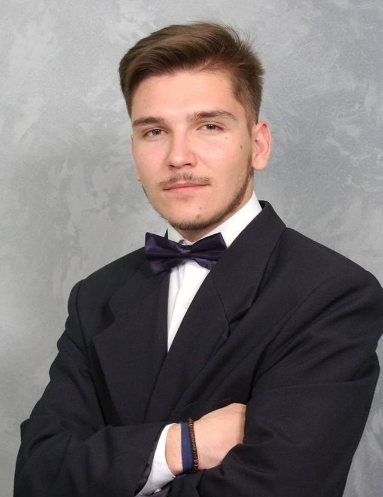

I’m Refik Hyseni, born on 1999, Presevo, Serbia.
I’m a pre-graduate student of Computer Engineering in International Balkan University located in Skopje, North Macedonia.
I study in 100% English language.
I have worked as VA in an US company for a year and a half now, where I have experienced Data Entry, language improvement, Customer Service, Customer Support.
I have also worked in café as a Manager (including waiter and barmen duties), worked in a wedding restaurant as a seasonal job during summer.
I need to mention that I have been taking part in a Cultural Association Sh.K.Dituria as a Volunteer in many organizations, as helping poor families, helping people in need, helping other students, also worked as a translator in English and Turkish languages.
It is valuable mentioning that I was Vice President of NGO USLPM
To not foget mentioning, I have done internship of 1 year and a half in a Computer Service Store on my 7th grade of Primary School.
Contact me:
refikhyseni66@gmail.com
+389 71 623 414